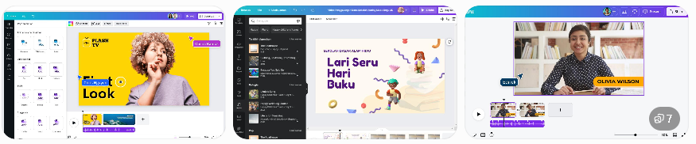
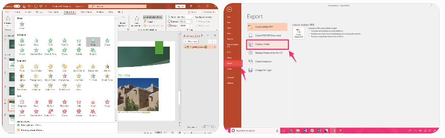
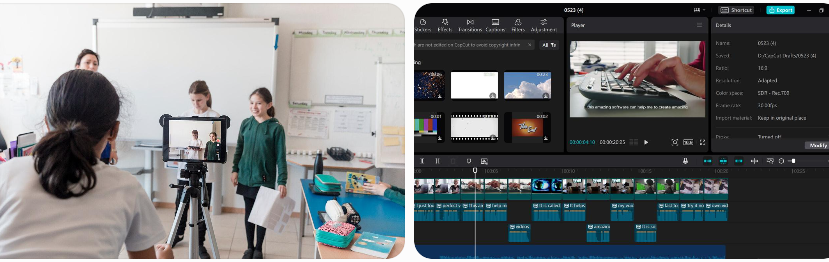
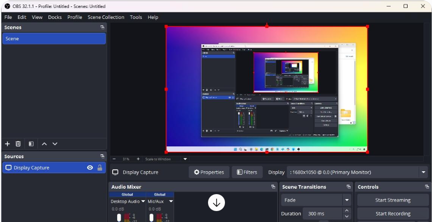
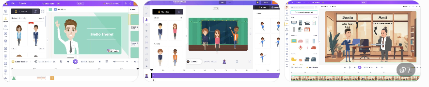
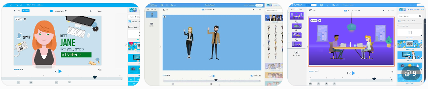
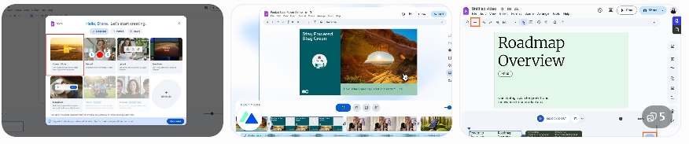
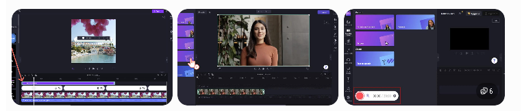
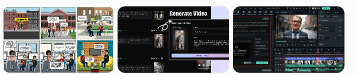
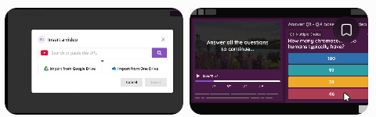

Réaliser ta vidéo et intégrer les QCM
1. Votre mission
Créer une vidéo de 3 à 5 minutes sur un risque de cybersécurité, puis intégrer au moins cinq QCM à différents moments. Votre histoire doit présenter les personnages, un problème, une décision et une solution sécuritaire.
2. Écrire votre scénario
- Choisir un thème : hameçonnage, faux site Web, mots de passe, faux concours, cyberintimidation ou code QR suspect.
- Introduction : présenter les personnages et le contexte.
- Problème : montrer la menace et les indices suspects.
- Décision : montrer le choix que doit faire le personnage.
- Solution : expliquer comment agir de façon sécuritaire.
Exemple : le faux courriel de la direction
Sarah travaille à la bibliothèque. Elle reçoit un message demandant son mot de passe scolaire. Elle repère une adresse inhabituelle et une demande urgente. Elle ne clique pas, signale le message et vérifie auprès de l’école.
3. Neuf méthodes pour réaliser votre vidéo
Choisissez UNE méthode parmi les neuf présentées ci-dessous. Les captures A à G proviennent des exemples fournis; les illustrations H et I sont des schémas explicatifs.
A Méthode A — Créer une vidéo animée avec Canva

Idéal pour : Raconter une histoire avec des personnages, des décors, des messages et des bulles de dialogue.
- Ouvrez Canva et connectez-vous.
- Choisissez Créer un design → Vidéo.
- Créez une page pour chaque scène de votre scénario.
- Dans Éléments, recherchez des personnages, des ordinateurs et des icônes de cybersécurité.
- Ajoutez les dialogues dans des bulles de texte.
- Utilisez Animer pour faire apparaître les personnages et les messages.
- Ajoutez votre voix, des sous-titres et des transitions.
- Choisissez Partager → Télécharger → Vidéo MP4.
B Méthode B — Transformer PowerPoint en vidéo

Idéal pour : Les élèves qui connaissent déjà PowerPoint.
- Ouvrez PowerPoint et créez une présentation.
- Créez une diapositive pour chaque scène.
- Insérez des personnages, des images, des messages et des dialogues.
- Ajoutez des animations et des transitions.
- Utilisez Enregistrer pour ajouter votre narration.
- Cliquez sur Fichier → Exporter → Créer une vidéo.
- Choisissez la qualité HD ou Full HD, puis le format MP4.
- Enregistrez et vérifiez la vidéo.
C Méthode C — Filmer un court métrage avec un téléphone

Idéal pour : Les élèves qui aiment jouer des personnages et filmer des scènes.
- Écrivez les dialogues et répartissez les rôles.
- Préparez les accessoires et choisissez un endroit calme.
- Filmez les scènes avec un téléphone, avec l’autorisation des personnes concernées.
- Transférez les vidéos sur votre ordinateur.
- Ouvrez un logiciel de montage comme CapCut.
- Importez les séquences et placez-les dans le bon ordre.
- Ajoutez les titres, les sous-titres et les transitions.
- Exportez le film au format MP4.
D Méthode D — Enregistrer son écran avec OBS Studio

Idéal pour : Montrer des exemples de faux courriels ou expliquer comment repérer une fraude.
- Installez OBS Studio.
- Préparez une simulation fictive d’un courriel ou d’une page Web.
- Ouvrez OBS et ajoutez une source Capture d’écran.
- Vérifiez le microphone.
- Cliquez sur Démarrer l’enregistrement.
- Présentez votre scénario et expliquez les indices suspects.
- Cliquez sur Arrêter l’enregistrement.
- Vérifiez le fichier et convertissez-le en MP4 si nécessaire.
E Méthode E — Créer un dessin animé avec Animaker

Idéal pour : Réaliser une histoire animée sans filmer de vrais acteurs.
- Ouvrez Animaker.
- Créez un nouveau projet vidéo.
- Choisissez un décor : chambre, classe ou bureau.
- Ajoutez des personnages animés.
- Créez une scène pour chaque partie du scénario.
- Ajoutez les dialogues et les expressions des personnages.
- Ajoutez une narration et ajustez la durée des scènes.
- Prévisualisez et exportez la vidéo selon les options du compte.
F Méthode F — Créer une vidéo explicative avec Powtoon

Idéal pour : Présenter une situation de cybersécurité sous forme d’histoire illustrée.
- Ouvrez Powtoon.
- Choisissez un modèle de vidéo animée.
- Remplacez les textes par ceux de votre scénario.
- Ajoutez les personnages et les objets.
- Organisez les scènes dans l’ordre.
- Ajoutez les mouvements, les dialogues et la narration.
- Prévisualisez le résultat.
- Exportez la vidéo si votre forfait le permet.
G Méthode G — Google Présentations vers Google Vids

Idéal pour : Les élèves habitués à Google Présentations.
🔗 Ouvrir Google Présentations ↗
- Ouvrez Google Présentations.
- Créez une présentation et donnez-lui le titre de votre scénario.
- Préparez une diapositive pour chaque scène.
- Ajoutez les personnages, les images, les messages et les dialogues.
- Choisissez Fichier → Convertir en vidéo, si l’option est disponible.
- Dans Google Vids, sélectionnez les diapositives et cliquez sur Import.
- Ajustez la durée des scènes et ajoutez la narration, les transitions et les animations.
- Exportez la vidéo finale en MP4.
H Méthode H — Monter une vidéo avec Clipchamp

Idéal pour : Assembler des scènes filmées, des captures d’écran, des images, des voix et des sous-titres dans une même vidéo.
- Ouvrez Clipchamp et créez un nouveau projet vidéo.
- Choisissez Importer des médias et sélectionnez vos images, vos vidéos ou vos enregistrements.
- Glissez chaque séquence sur la chronologie, dans l’ordre de votre scénario.
- Raccourcissez les clips en déplaçant leurs bords; séparez-les si nécessaire.
- Dans Texte, ajoutez un titre et les dialogues importants.
- Ajoutez des transitions entre les scènes, sans en abuser.
- Dans Enregistrer et créer, enregistrez votre voix; ajoutez des sous-titres et vérifiez leur exactitude.
- Cliquez sur Exporter, choisissez une résolution adaptée (par exemple 1080p), puis enregistrez le MP4.
I Méthode I — Créer une vidéo avec des images ou des séquences générées par IA

Idéal pour : Réaliser une histoire visuelle sans filmer de personnes, avec un outil d’IA autorisé par l’école.
- Découpez le scénario en scènes de 10 à 30 secondes et écrivez ce qui doit être visible.
- Préparez une description pour chaque scène : personnages, lieu, action, ambiance et cadrage.
- Dans un outil d’IA approuvé par l’école, créez une image ou une courte séquence pour chaque scène.
- Comparez les scènes : les personnages, les vêtements et les décors doivent rester cohérents.
- Corrigez les images inexactes; ne mettez jamais de renseignements personnels dans les consignes.
- Importez les médias dans Canva ou Clipchamp et organisez-les sur la chronologie.
- Ajoutez les dialogues enregistrés, les sous-titres et une conclusion expliquant la bonne pratique de sécurité.
- Prévisualisez, corrigez et exportez en MP4.
« Animation 3D éducative : un élève dans une bibliothèque scolaire regarde un courriel suspect sur son ordinateur. Ambiance claire, expression hésitante, sans texte à l’écran. »
4. Intégrer cinq QCM dans Wayground (Quizizz)

Dans cette partie, vous allez importer votre vidéo MP4, choisir cinq moments où elle doit s'arrêter et insérer cinq questions à choix multiples.
Étape 1 — Préparer la vidéo
- Terminez votre vidéo sur la cybersécurité et exportez-la au format MP4.
- Enregistrez le fichier dans un dossier facile à retrouver (par exemple Téléchargements).
- Ouvrez le fichier pour vérifier la lecture et le son.
- Notez cinq moments où poser une question, idéalement après une scène importante.
Étape 2 — Importer la vidéo dans Wayground
- Allez sur Wayground ↗ et connectez-vous à un compte autorisé à créer du contenu.
- Cliquez sur Create (Créer), puis choisissez Video (Vidéo).
- Sélectionnez Upload any video (Importer une vidéo) et choisissez votre fichier MP4 sur l’ordinateur.
- Cliquez sur Proceed (Continuer), puis attendez la fin de l’importation.
- Vérifiez que la vidéo apparaît dans l’éditeur.
Étape 3 — Placer le premier QCM au bon moment
- Lancez la lecture de la vidéo dans l’éditeur.
- Arrêtez la vidéo juste après la scène que les spectateurs doivent comprendre.
- Cliquez sur + Add a Question (Ajouter une question).
- Choisissez Multiple Choice (Choix multiples).
- Vérifiez que la question est placée au moment souhaité sur la chronologie.
Étape 4 — Rédiger le QCM
- Écrivez une question courte portant sur la scène précédente.
- Ajoutez quatre propositions de réponse.
- Indiquez une seule bonne réponse.
- Ajoutez une explication de la bonne réponse si l’éditeur propose ce champ.
- Enregistrez la question et reprenez la lecture de la vidéo.
Étape 5 — Insérer les quatre autres QCM
- Avancez jusqu’à la deuxième scène importante.
- Arrêtez la lecture et ajoutez un nouveau QCM.
- Recommencez jusqu’à obtenir cinq questions réparties dans toute la vidéo.
- Vérifiez les moments choisis, les quatre réponses et les corrections.
Étape 6 — Tester et publier
- Utilisez Preview (Aperçu) pour regarder l’activité comme un spectateur.
- Vérifiez que chaque QCM apparaît après la scène concernée.
- Corrigez les questions, les réponses et leur emplacement au besoin.
- Cliquez sur Publish (Publier) et remettez le lien selon les consignes de l’enseignant.
Exemple : cinq questions pour un scénario sur l’hameçonnage
Après la réception du courriel — Quel élément du message est suspect ?
Réponse attendue : Une demande inattendue de renseignements personnels.
Après la demande de mot de passe — Pourquoi ne faut-il pas donner son mot de passe ?
Réponse attendue : Il doit rester secret.
Après l’hésitation du personnage — Que devrait faire le personnage ?
Réponse attendue : Ne pas cliquer sur le lien suspect.
Après la vérification — Comment confirmer l’authenticité du message ?
Réponse attendue : Contacter l’école par un moyen officiel.
À la fin de la vidéo — Quelle bonne pratique faut-il retenir ?
Réponse attendue : Signaler les messages suspects.
Exemple de QCM complet
Question : Un courriel demande ton mot de passe scolaire. Que dois-tu faire ?
- A. Répondre immédiatement.
- B. Cliquer sur le lien.
- C. Ne pas cliquer et vérifier auprès de l’école. (Bonne réponse)
- D. Transmettre le mot de passe à un ami.
Explication : un mot de passe ne doit pas être transmis en réponse à une demande suspecte. Il faut vérifier directement auprès de l’établissement.
En cas de difficulté
- Vous ne voyez pas Create : votre compte élève ne permet peut-être pas la création. Demandez l’aide de l’enseignant.
- La vidéo ne s’importe pas : vérifiez le format MP4 et la taille du fichier.
- Le QCM arrive trop tôt : revenez à la chronologie et ajustez le moment de la question.
- Vous ne pouvez pas publier : remettez le MP4 et un document contenant vos cinq QCM à l’enseignant.
🔗 Tutoriel officiel Wayground : créer une vidéo interactive ↗
5. Vérification avant la remise
- Scénario original sur la cybersécurité
- Vidéo de 3 à 5 minutes avec narration ou dialogues
- Au moins cinq QCM répartis dans la vidéo
- Quatre choix et une bonne réponse pour chaque QCM
- Aucune donnée personnelle ni véritable mot de passe
- Vidéo et questions testées avant la remise
6. Grille d’évaluation
| Catégorie | Ce qui est évalué | Poids |
|---|---|---|
| Connaissances et compréhension | Le risque de cybersécurité est bien expliqué. | 25 % |
| Habiletés de la pensée | Le scénario et les questions. | 25 % |
| Communication | La clarté et la qualité de la vidéo. | 25 % |
| Mise en application | La création et l’intégration des QCM. | 25 % |